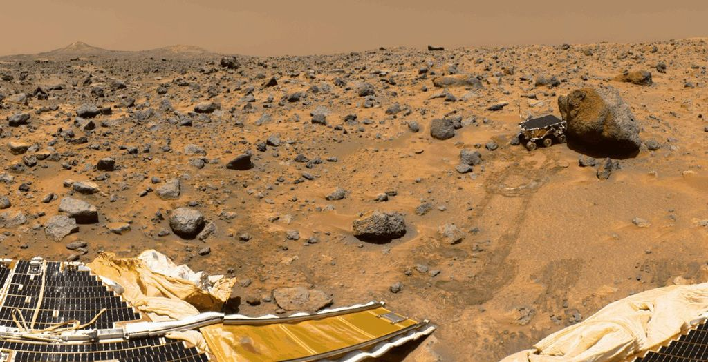

The mission that opened a new chapter in exploring the Red Planet.

On July 4, 1997, NASA's Mars Pathfinder spacecraft landed on Mars. It delivered the Sojourner rover, the first successful rover to operate on another planet.
Sojourner explored nearby rocks and soil, sending valuable scientific information back to Earth. Its mission helped scientists understand the Martian environment and demonstrated a new way to explore Mars.
After its mission ended in 1997, the Pathfinder lander and Sojourner rover remained on the surface of Mars. Their work became an important part of space exploration history.